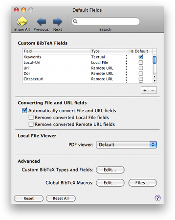

Default Fields Default Fields
Default Fields Default FieldsThe Defaults pane lets you add new default BibTeX fields, that will be added to all entries. You can also edit BibDesk's global macro definitions for all files.

Custom BibTeX Fields: You can set several special custom fields types here.
Select the `Is Default' check box if you would like to add the field by default to every entry when a file is opened or a new publication is made. Select this to avoid adding them every time by hand. This setting is not relevant for boolean and rating fields.
Converting File and URL Fields: BibDesk can automatically convert old style local file and remote URL to the new style linked files and URLs. BibDesk only automatically converts in new items that do not yet have linked files or URLs. Here you can choose whether BibDesk should automatically convert and whether to remove the old fields after conversion has succeeded. See Convert Files for more information.
Local File Viewer: Here you can choose a custom viewer to use for opening linked PDF files. Choose `Default' to use the system default viewer.
Custom BibTeX Types and Fields: Clicking the button allows you to add new types and add new fields to existing fields.
Global BibTeX Macros: Clicking the "Edit..." button allows you to add global macro definitions. You can also select BibTeX (style) files from which global macro definitions will be loaded, after clicking the "Files..." button.
| Custom Types and Fields | ||
| Editing Global Macro Definitions | ||
| Adding Custom Column Header Images and Titles |